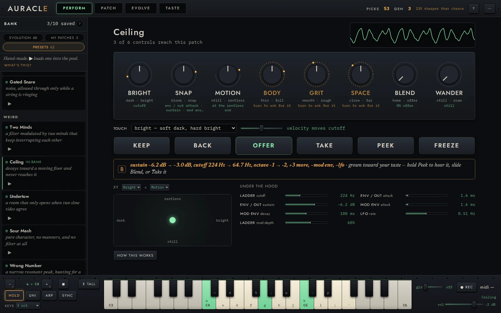
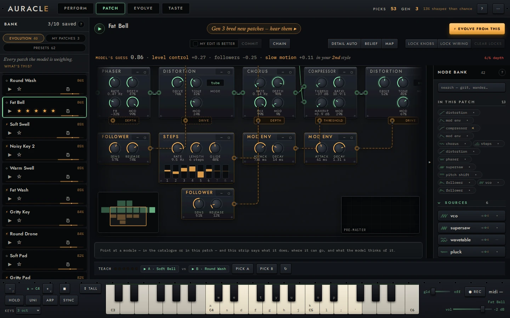
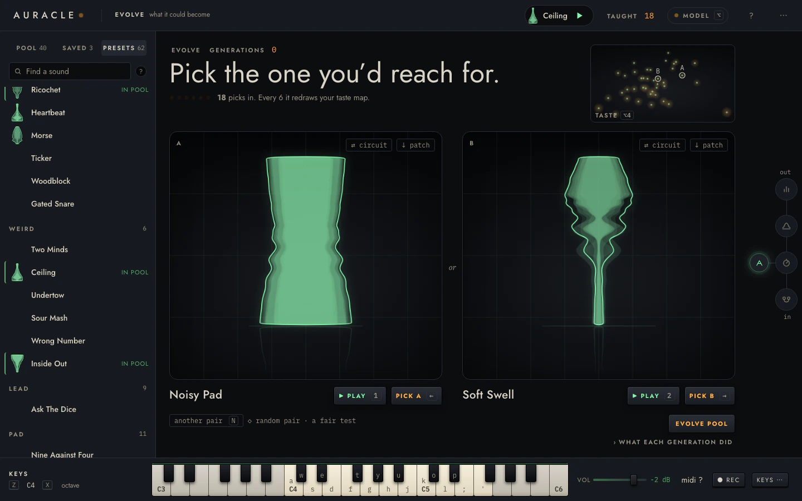
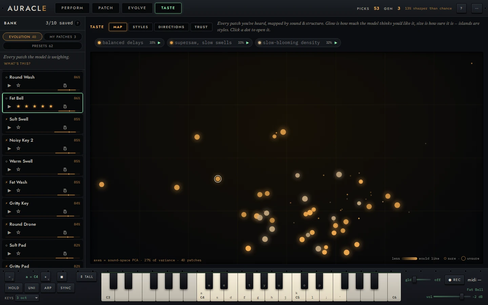
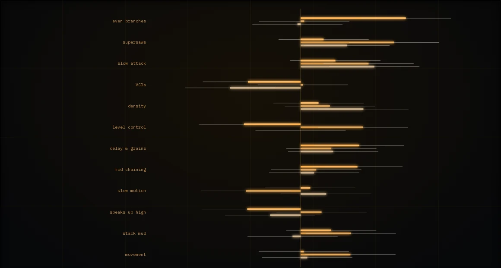

Modular synthesizer · Plays in your browser
A synthesizer
that grows toward you
Pick the sound you’d reach for. It learns your ear, and every generation grows a little closer.
Free, with no account and nothing to install. Your sounds and your taste stay in your browser.
Try it here
Two sounds. The one you’d reach for.
Auracle plays you two sounds, the same short phrase on each. Pick the one you’d reach for, and move on. Every pair is dealt at random, so each pick is also a fair test of what it guessed.
What it learned
Press 1 and 2, then pick the one you’d reach for.
A miniature, made for this page: its sounds come from four controls, and it leans one way at a time. The instrument hears many more qualities in every sound, and can hold several styles of taste at once.
The problem
Presets are fast. Patching is deep. Auracle grows.
Browse
Presets are quick, and nothing you hear today helps tomorrow. You start over every time.
Build
Patching from scratch goes deep, slowly. You get what you can already imagine, at the speed you can wire it.
Grow
Auracle learns from every pick and grows new sounds toward your taste. What you teach it on Tuesday is still there on Friday.
The instrument
One instrument, four views.

PERFORM. Play the sound with controls named for what you hear, from BRIGHT to SPACE. Each one turns the few knobs that move this sound most in its direction. Press OFFER, and it grows a variant into B for you to blend or take.

PATCH. Open a sound to see its patch: every module, cable, and knob, each knob in its own units. Change any of it while you play. Lock what you love, and ⚡ EVOLVE FROM THIS grows new sounds around it.

EVOLVE. Pick between two sounds, and a meter counts the picks until it next redraws your taste. Press EVOLVE POOL, and the log says what each generation changed, knob by knob and module by module.

TASTE. Your sounds on one map, placed by how they sound and how they’re built. A brighter dot is one it rates higher for you; a bigger dot is one it’s less sure about.
How it learns
It can be wrong, and it tells you when.
Every pick tells it which of two sounds you’d reach for. From those picks it learns which way your taste leans, and it can hold more than one way at once: you can love dark drones and bright plucks without it averaging them into neither. Before each pick it guesses yours, and afterward it shows you whether it was right.
The taste model, with the math ▸
How it breeds
Every generation grows a little closer.
Once it has a first guess at your taste, press EVOLVE POOL. The sounds it rates highest each take a short walk: a few knobs move, and now and then a module changes. Each walk ends in a new sound, which joins the pool only if it rates above the weakest one there. The lowest-rated sounds are replaced. A sound you saved never is.
How a generation breeds, with the math ▸The modules
Every sound is a real instrument.
Not samples. Each sound is a modular patch, built and wired from scratch, and you play it from your computer keys, a MIDI keyboard, or the keys on screen. Open it, and every module, cable, and knob is there to change.
- sourcesVCO, supersaw, a wavetable, a physically modeled pluck, a formant oscillator that speaks vowels, and noise
- shapeWavefolder, distortion in three drive modes, and bitcrush
- filterA filter with three state-variable responses and a diode ladder, and a three-band EQ
- spaceDelay, chorus, reverb, phaser, flanger, and granular
- motionTremolo, vibrato, and pitch shift
- dynamicsCompressor, ducker, and gate, each with a control input you can sidechain into
- combineMix, ring mod, and vocoder, each merging two chains into one
- modulationLFO, envelope, sample-and-hold, follower, Euclidean rhythm, and a step sequencer
- shape cvQuantize, slew, rectify, and hold, which bend a modulator on its way to a knob. They chain: s&h rand → quantize → slew before it ever reaches a cutoff
- combine cvSix ways to merge two modulators into one cable
Turn a knob, and you hear it at once. Lock it, and ⚡ EVOLVE FROM THIS leaves it as it is.
Start
Play it now, offline, or from source.
Play it now
The live build, rebuilt with every change to the source. When it asks, pick the three sounds you’d reach for, then pick between pairs.
Play it in your browser ▸Run it offline
Every release comes with a ready-built bundle. Unzip it, run python3 serve.py, and open the address it prints. No Rust needed.
Releases ▸Build it
A Rust workspace of five crates, and a web app with no build step. Clone it, then run make setup and make serve.
Source ▸